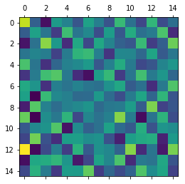
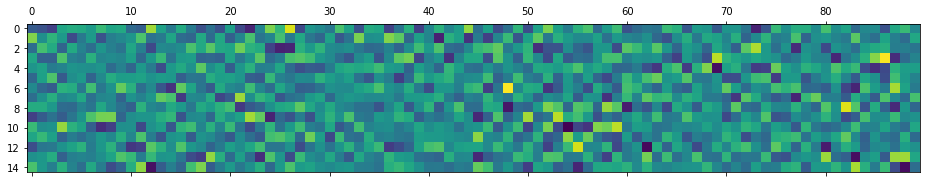

Second order¶
In [1]:
import numpy as np
import matplotlib.pyplot as plt
import fem
from scipy.sparse.linalg import svds
In [2]:
n, m, degs = 5, 3, [1,2]
w = fem.discrete.simulate.model_parameters(n, m, degs)
In [3]:
x = fem.discrete.simulate.time_series(w, n, m, o=15.0)
In [4]:
fig, ax = plt.subplots(n, 1, figsize=(16,4))
for i, xi in enumerate(x):
ax[i].plot(xi[:100], 'k-')
ax[i].axis('off')
plt.show()

In [5]:
x1, x2 = x[:,:-1], x[:,1:]
w_fit, d = fem.discrete.fit.fit(x1, x2, degs, iters=50)
In [6]:
fig, ax = plt.subplots(1, 1+len(degs), figsize=(4*(1+len(degs)),4))
for di in d:
ax[0].plot(di, 'k-', lw=0.1)
for i,a in enumerate(ax[1:]):
w_flat = w[degs[i]][:,:].flatten()
w_fit_flat = w_fit[degs[i]][:,:].flatten()
lo, hi = w_flat.min(), w_flat.max()
grid = np.linspace(lo, hi)
a.plot(grid, grid, 'r--', lw=1)
a.scatter(w_flat, w_fit_flat, c='k', s=0.1)
plt.show()

In [7]:
sol1 = np.linalg.solve(w[1], w_fit[1])
plt.matshow(sol1)
np.allclose(w[1].dot(sol1), w_fit[1])
Out[7]:
True

In [8]:
plt.matshow((w[1]-w_fit[1])[:1])
plt.matshow((w[2]-w_fit[2])[:1])
Out[8]:
<matplotlib.image.AxesImage at 0x7fe5f20e92d0>


In [9]:
plt.matshow(w[1]-w_fit[1])
plt.matshow(w[2]-w_fit[2])
Out[9]:
<matplotlib.image.AxesImage at 0x7fe5f2166550>


In [ ]: